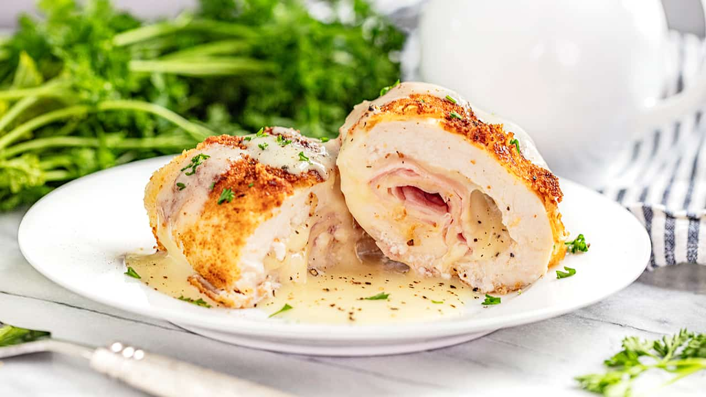

Cordon Bleu Ingredients
- 2 lbs. boneless chicken breasts
- 3 to 6 pieces sliced ham
- 3 to 6 pieces Swiss cheese
- 1 1/2 cups Panko bread crumbsd
- 2 eggs beaten
- 2 cups cooking oil
- 2 cups cooking oil
Instructions
- Place a plastic wrap over a flat surface. Arrange a piece of chicken over the wrap, and then cover the chicken with it. Pound the chicken using a meat tenderizer tool until it flattens.
- Sprinkle salt all over the chicken breast.
- Prepare the filling by putting a slice of cheese and ham over the chicken. Roll the chicken to cover the filling and then seal it by inserting toothpicks into the rolled chicken.
- Heat oil in a cooking pot.
- Dip the chicken in beaten egg and then roll over the bread crumbs. Do this step twice to make the coating thicker.
- Deep fry for 12 minutes in medium heat. Note. if you need to turn the chicken over to fry the opposite side, you can do so and cook it for 8 minutes. If you will deep while the chicken is fully submerged, 12 minutes should be enough, but feel free to cook no longer than 15 minutes.
- Remove the chicken from the pot. Let it cool down. Slice into serving pieces.
- Prepare the sauce by melting butter in a sauce pan. Add onion. Cook until soft.
- Pour heavy whipping cream. Let boil. Add Dijon mustard. Stir and continue to cook in medium heat until it reduces to half. Add salt to taste.
- Pour sauce over the chicken. Serve.
- Share and enjoy!